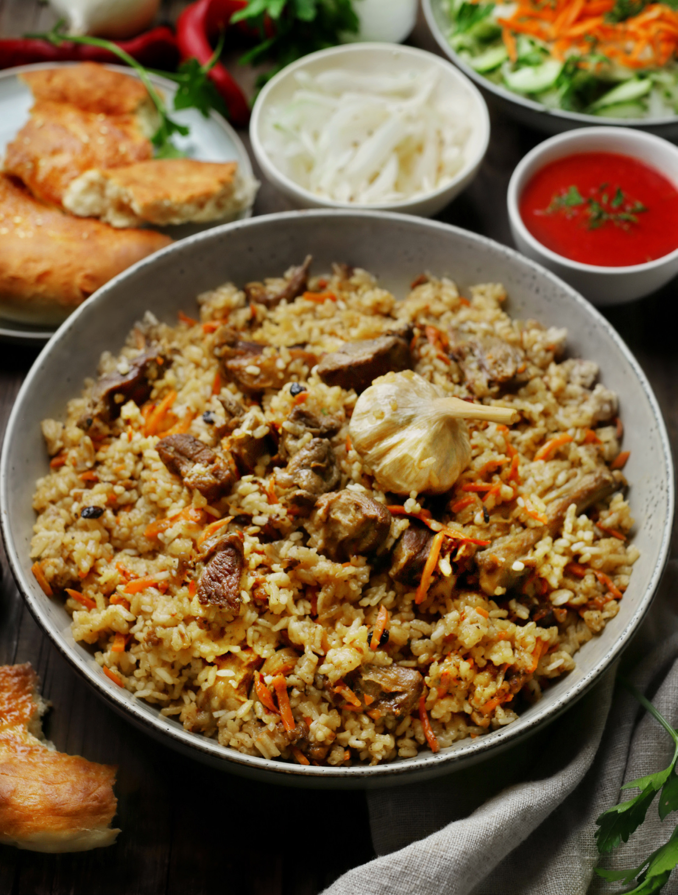

Разнообразию рецептов плова можно поразиться, их великое множество, и у каждого свой неповторимый нюанс. Существует и сладкий плов, версии с добавлением разнообразных фруктов, сушеных ягод или грибов и овощей, и с разными видами мяса. На лаваше, без него, томленный на костре, в печи или в казане, шах- плов, который запекается в хлебном тесте… Сложно описать все варианты рецептов, поэтому остановимся на одном. В приготовлении плова есть несколько главных секретов: правильно подобранный рис, хорошее мясо, курдючный жир и специи. Практически все необходимое можно купить на рынке и тут же проконсультироваться по поводу подходящего куска баранины, который могут нарубить по вашему желанию, взять у мясника курдючный жир. Там же часто продают готовые наборы специй, и часто неплохие, но можно сделать собственный набор, в состав обязательных пряностей для него входят молотый черный и красный перец, молотая паприка, куркума, кориандр, иногда пажитник и чабер, непременно барбарис и зира (кумин). Для придания блюду небольшой кислинки можно добавить сумах. С рисом сложнее. Можно использовать тот, на упаковке которого значится «рис для плова». Классическим сортом считается девзира или другой узбекский рис для плова (чунгара, лазер, аланга, хорезмский). Их можно найти на рынке и в интернет-магазинах, но оптимально выбирать на рынке. Обращайте внимание, чтобы рисинки были цельные, немного вытянутые, довольно плотные и визуально не припыленные слоем крахмала. Хотя рис девзира покрыт характерной красной пылью, это одна из особенностей сорта, поэтому его стоит дольше промывать. По моему личному опыту, вкусный плов получается из длиннозерного пропаренного риса, басмати, иногда можно использовать рис жасмин, но учитывая, что у него есть собственный фруктово-цветочный аромат. В целом, к любому сорту надо приноровиться. И если вы нашли хороший рис, но с первого раза идеального результата не достигли, лучше продолжить с этим сортом, учитывая предыдущий опыт. Еще один немаловажный аспект — посуда для приготовления плова. Казан не обязателен, хотя это идеальный вариант, но можно использовать также толстостенную чугунную кастрюлю, которая хорошо держит тепло. Для количества ингредиентов в данном рецепте лучше взять казан или кастрюлю объемом не менее 4 литров. Есть мнение, что плов — это, скорее, про рис, а не мясо с рисом, но кто станет осуждать, если мяса захочется добавить больше? В этом случае, после того как вытопили жир из курдюка, нужно двумя партиями обжарить мясо до золотистой корочки, переложить в миску, обжарить лук, затем вернуть мясо в казан, потушить с луком 5–7 минут, добавить морковь и далее готовить по рецепту.